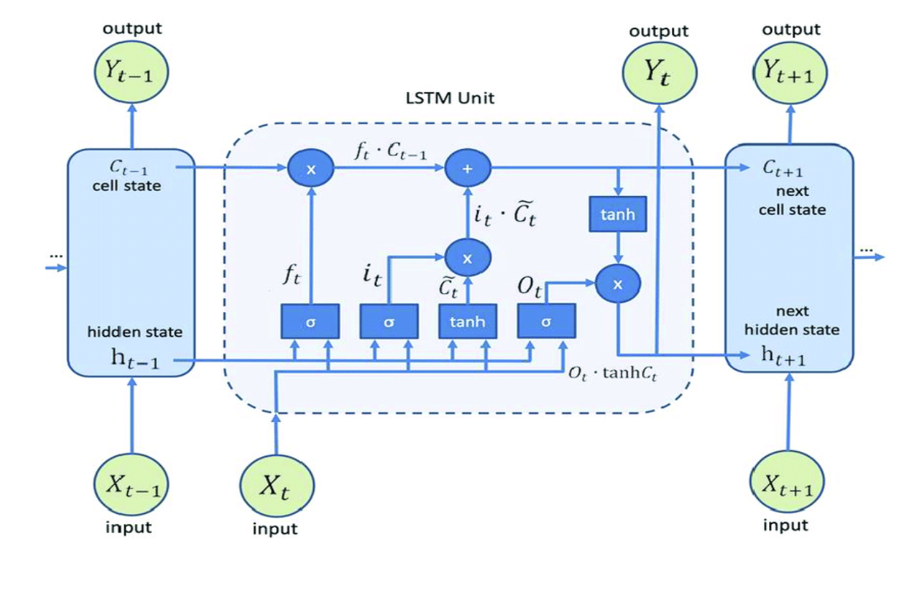
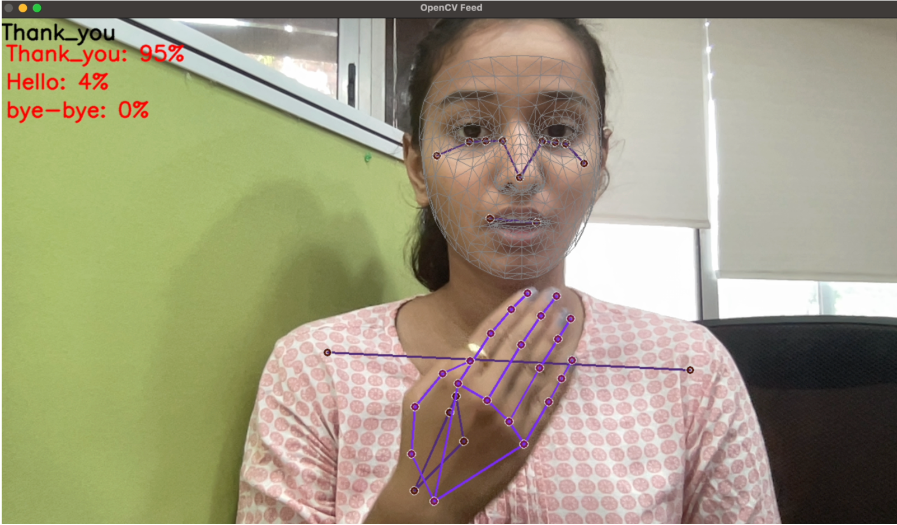

The Problem
For millions of individuals with hearing and speech impairments, sign language is the primary mode of communication. However, there remains a significant communication gap between sign language users and the broader community, leading to challenges in accessing education, employment, healthcare, and social interactions.
Solution
The Real-Time Sign Language Recognition System (SLR) addresses these challenges using state-of-the-art computer vision and machine learning techniques.
Key Technical Features:
- Feature Extraction: Leveraged MediaPipe to extract key hand, face, and pose landmarks (468 facial landmarks, 33 pose landmarks, and 21 landmarks for each hand)
- Data Processing and Training: Used LSTM model optimized for sequential video data to recognize temporal patterns in sign gestures
- Real-Time Prediction: Implemented a pipeline using OpenCV and MediaPipe's holistic model for live detection


Applications
- Education: Supporting teachers and learners in mastering sign language
- Healthcare: Enabling seamless communication between healthcare providers and patients
- Public Services: Facilitating interactions in workplaces and customer service